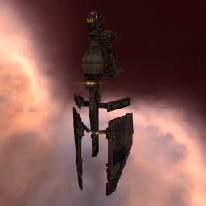

Vigil

Тип корабля: Фрегат
Государство/Организация: Minmatar
Примерная стоимость: 406.000 ISK
Описание
«Виджил» — нестандартный для матаров корабль, позволяющий как осуществлять дальние разведывательные операции, так и использовать средства электронного противодействия. Он быстр и маневрен, позволяет держать необходимую дистанцию, не подпуская неприятеля на расстояние ведения эффективного огня и применяя средства постановки помех или иное электронное оборудование.
Характеристики
Корпус
Запас прочности корпуса: 300 ед.
Вместимость грузового отсека: 250 м^3
Объем отсека для дронов: 5 м^3
Пропускная способность канала телеуправления: 5 Мбит/с
Масса: 1.080.000 кг
Занимает объем: 17.400,0 м^3 (2.500,0 м^3 в разобранном виде)
Влияние инертности конструкции: 3,22x
Сопротивление корпуса ЭМ-урону: 33 %
Сопротивление корпуса термальному урону: 33 %
Сопротивление корпуса кинетическому урону: 33 %
Сопротивление корпуса фугасному урону: 33 %
Броня
Запас прочности брони: 300 ед.
Сопротивление брони ЭМ-урону: 60 %
Сопротивление брони термальному урону: 35 %
Сопротивление брони кинетическому урону: 25 %
Сопротивление брони фугасному урону: 10 %
Щит
Запас прочности щита: 350 ед.
Влияние на время регенерации щитов: 10 минут и 25 секунд
Сопротивление щита ЭМ-урону: 0 %
Сопротивление щита термальному урону: 20 %
Сопротивление щита кинетическому урону: 40 %
Сопротивление щита фугасному урону: 50 %
Сопротивление средствам РЭП
Сопротивление накопителя нейтрализирующему воздействию: 0 %
Сопротивление воздействию генератору стазис-поля: 0 %
Сопротивление воздействию помех на наводку вооружения: 0 %
Накопитель энергии
Емкость накопителя: 235,0 ГДж
Время востановления заряда: 130 с
Целеуказания
Максимальная дальность захвата цели: 65 км
Максимальное количество захваченных целей: 6
Радиус сигнатуры: 34 м
Разрешающая способность систем захвата цели: 560 мм
Эффективность радарной системы: -
Эффективность магнитнометрической системы: -
Эффективность гравиметрической системы: -
Эффективность ладарной системы: 12 ед.
Двигательная установка
Максимальная скорость: 410 м/с
Скорость в варп-режиме: 5,0 а.е./с.
Служба оснащения
Мощность ЦПУ: 225,0 Тф
Мощность реактора: 26 МВт
Калибровка: 400 ед.
Точки монтажа орудийных установок: -
Точки монтажа пусковых установок: 2
Разъемы большой мощности: 2
Разъемы средней мощности: 5
Разъемы малой мощности: 2
Разъемы под установку тюнинг-модулей: 3